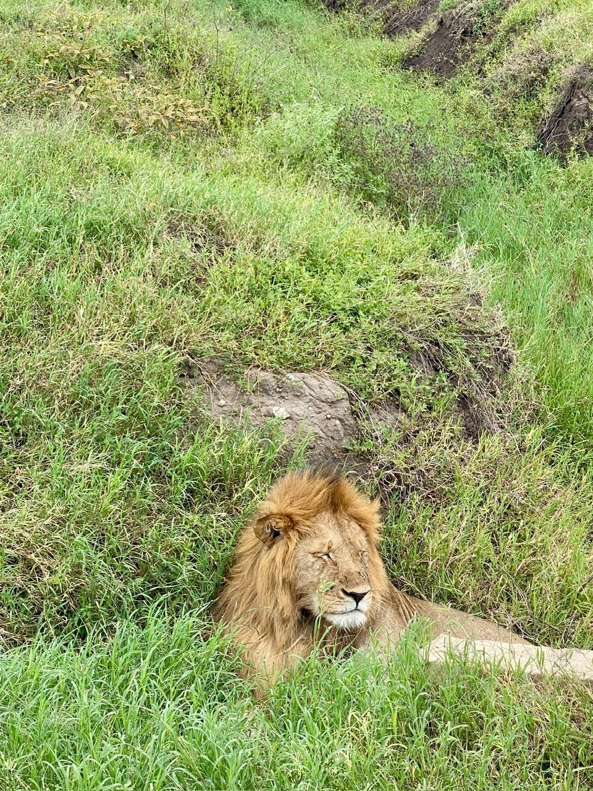
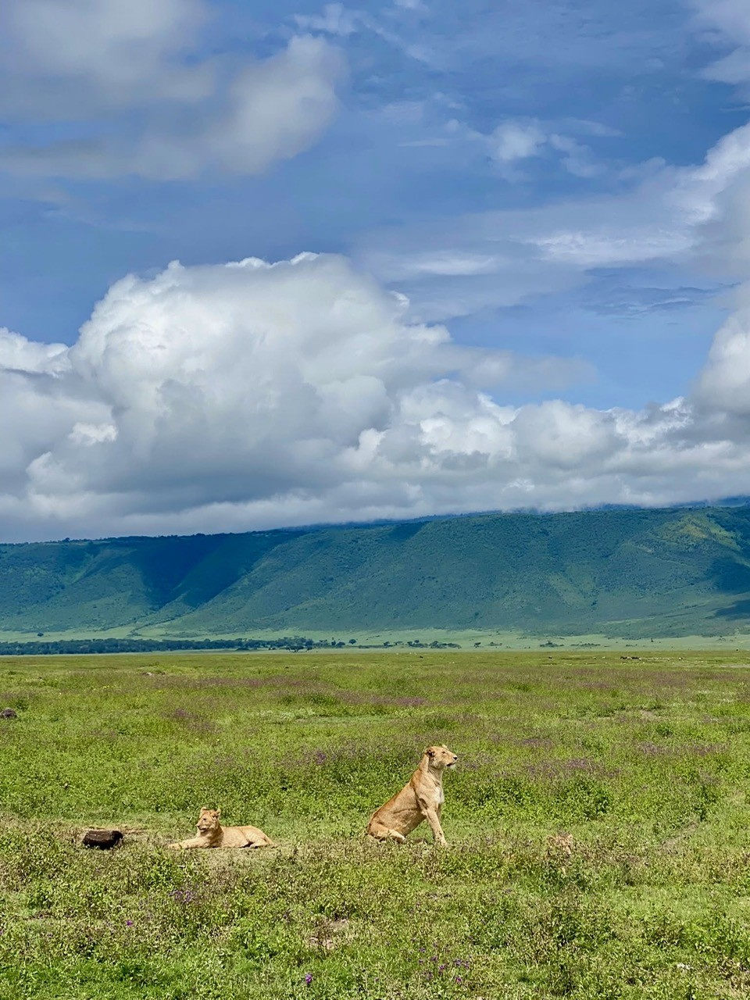
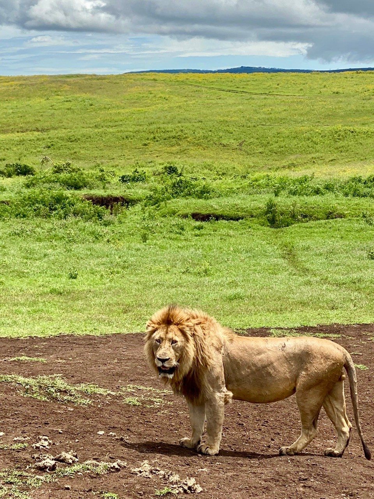
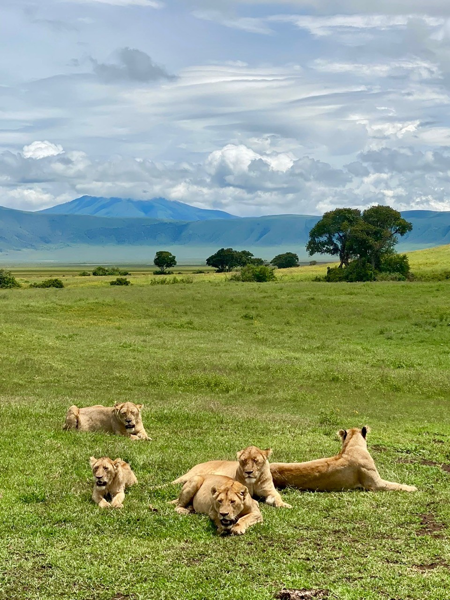

A Kingdom Without Walls
TANZANIA · AFRICA · WILDLIFE
There is a particular kind of silence in the African wilderness. It is not the absence of sound. There are birds calling from the grass, insects hidden in the vegetation and wind moving across the plains. The silence comes from something else: the feeling that the landscape itself is paying attention.
Somewhere in Tanzania, among grass almost the same colour as his coat, a lion appeared. There were no fences around him, no barriers and no visible line separating his territory from the enormous landscape beyond it. For a few moments, we were simply visitors inside a world whose boundaries we could not see.
At first, very little seemed to be happening. The lion rested among the vegetation, apparently unconcerned by everything around him. But the longer we watched, the more that apparent stillness began to reveal.
Around this animal existed an entire invisible geography: females related across generations, males forming alliances, territories announced through scent and sound, prey moving with water and rain, cubs learning through play and rivals waiting somewhere beyond the horizon. The landscape looked open, but to the lions living inside it, it was anything but empty.


The Energy of Stillness
The first lion seemed almost absorbed by the landscape. His coat disappeared into the dry vegetation while the darker mane framed a face that remained calm and alert. Nothing about the encounter felt hurried, and that stillness is one of the most important parts of a lion's life.
Lions can spend a remarkable proportion of the day resting, particularly during the hottest hours. From a human perspective, an animal capable of such extraordinary power can appear surprisingly inactive. But inactivity is not the opposite of survival. It is part of it.
Hunting large prey requires short bursts of enormous effort. Defending territory can involve violent confrontations, while mating, travelling and competing with other lions all consume energy. In a hot environment, every unnecessary movement also has a cost. Resting allows lions to conserve energy until movement becomes worthwhile.
The dramatic moments may attract our attention, but much of a lion's existence is built around something quieter: waiting.
Built for the Heat
The African sun influences almost every part of this rhythm. During the middle of the day, shade can become valuable habitat, while activity often increases when temperatures fall, particularly from dusk through the night and into the cooler hours of morning.
Lions are well adapted to low-light conditions, giving them an important advantage when darkness makes it more difficult for prey to detect an approaching predator. Temperature therefore changes more than comfort. It influences when lions travel, when they hunt and when the landscape around them becomes active.
For an adult male there is another complication. The most recognisable feature of his appearance is also something he must carry beneath the African sun.
The Price of a Mane
Few features in the animal world are as immediately recognisable as the mane of an adult male lion. It transforms the outline of the head and shoulders, making an already powerful animal appear larger still. But the mane is not simply decoration.
Research on African lions has shown that characteristics of the mane can provide information to other lions. Its size and colour may influence how males assess rivals, while females can also respond to differences between males. Darker manes have been associated with factors including age, condition and testosterone.
But there is a trade-off. Hair retains heat, and a large, dark mane can make life beneath the African sun more demanding. The same characteristic that can make a male appear formidable also carries a physiological cost.
It is a small example of a much larger principle in nature: almost every advantage has a price.
“In the wild, even stillness has a purpose.”
A Different Kind of Cat
A single lion can dominate a photograph, but a lion cannot be fully understood alone. Most wild cat species live predominantly solitary lives. Lions are the great exception.
They have evolved a remarkably social way of living, forming groups known as prides. And at the centre of most prides are not the males, but the females.
Lionesses commonly remain in or close to the social group into which they were born. Mothers, daughters, sisters and aunts can therefore live together across generations, creating relationships that provide continuity to the pride.
Males may arrive and disappear. Territories may expand or contract. Cubs are born and grow. But related females can form the long-term foundation of lion society.


A Society Spread Across the Landscape
From a distance, the lions seemed small against Tanzania's enormous horizon. That scale can be deceptive, because a pride does not necessarily travel as a single compact group. Individuals may separate into smaller groups, spend time apart and later reunite.
This flexible social structure allows lions to use a much larger landscape than would be possible if every member remained permanently together. Even when separated, however, their connections remain.
Scent carries information. Familiar lions rub their heads and bodies against one another, while resting together and greeting companions after periods apart help maintain social bonds. Across much greater distances, sound becomes one of the most powerful tools available to them.
A Voice Across the Plains
A lion's roar is not simply an expression of power. It is communication across space. Under suitable conditions, a roar can travel for several kilometres across the landscape.
For pride members separated by darkness or vegetation, sound can reveal the presence and approximate location of another lion. For strangers, it can carry a very different message: someone already lives here.
The landscape that appears silent to us can therefore contain conversations taking place over distances far beyond our sight. A roar changes the meaning of empty space. Somewhere beyond the horizon, there is another lion.
A Territory You Cannot See
To human eyes, the savannah can seem almost limitless. To a lion, it contains borders. They are simply not drawn on the ground.
Territories can be advertised through scent marking and vocalisations. Familiar routes, resting places, water sources and areas where prey regularly move become part of a geography known intimately by the animals living there.
Those borders are not permanent. Neighbouring prides compete, resident males can be challenged and the distribution of food and water changes through the year. What appears to us as uninterrupted grassland is therefore divided by information carried through scent, sound and memory.
There are no walls here, but there are boundaries everywhere.
“The borders of a lion's kingdom are written in scent, sound and memory.”
The Life of a Male
For young males, those invisible borders eventually become impossible to ignore. Females often remain associated with their natal pride, but young males usually follow a very different path.
As they mature, they leave or are pushed away from the group in which they were born. It is one of the great transitions in a lion's life: a young male moves from the protection of a familiar social world into a landscape already occupied by other lions.
Some travel with brothers or other relatives, while others may join unrelated males. Together they can form a coalition, an alliance that can dramatically improve their chances of surviving, hunting and eventually challenging males that already control access to a pride.
For all the symbolism surrounding the solitary male lion, cooperation can be one of his greatest strengths.
Hunting in an Open World
The same principle appears when lions hunt. Strength alone is not enough. Zebras are fast, buffalo are enormously powerful and large herbivores are not passive animals waiting to be caught. They have evolved alongside predators and possess their own defences: speed, vigilance, horns, hooves and numbers.
A badly placed kick can seriously injure a lion, while an adult buffalo can be dangerous enough to turn predator into victim. Hunting therefore depends not only on power, but on timing, experience and opportunity.
Lionesses frequently cooperate when hunting, approaching prey from different positions. One animal may influence the direction in which prey moves while another waits closer to a likely escape route. But there is no single strategy that works in every situation.
Tall grass changes the possibilities. Darkness changes them again. The species being hunted, the number of lions, the wind, terrain and distance all matter. Even then, the hunt can fail.
Predation is not simply a demonstration of power. It is a contest between animals that both need to survive.
The Landscape Decides
This is why the lion's story cannot be separated from the landscape around it. Rain changes vegetation, vegetation changes visibility, water influences where herbivores gather, and herbivores determine where predators find opportunity.
Across northern Tanzania, wet and dry periods can transform enormous areas of grassland. When rain returns, fresh vegetation and temporary water allow grazing animals to spread across wider areas. As the landscape dries, reliable water becomes increasingly important and animals begin to use the territory differently.
Routes change. Cover changes. Prey concentrations change. The same territory can become a very different hunting landscape within a matter of months.
A lion does not control any of this. It adapts to it.
The kingdom follows the rain.


When the Landscape Stands Up
Then one of the males stood. Until that moment, much of his body had disappeared beneath the grass. Suddenly the scale of the animal became obvious: the shoulders, the weight of the mane, the muscles beneath the coat and the marks across his face that hinted at encounters we knew nothing about.
Through the camera, every detail seemed amplified. Yet there was no aggression in the moment, only awareness. He knew we were there, and we knew exactly where he was. For a short time, both sides simply observed.
Seeing a lion like this makes it easy to understand why the animal has accumulated so much symbolism in human culture. But strength is only one part of his story, because his position in this landscape is temporary.
No King Rules Forever
An adult male may gain access to a pride, but he does not inherit a permanent kingdom. Other males exist beyond the territory, coalitions move across the landscape and challenges eventually come.
A successful resident male or coalition must defend its position against rivals capable of taking it away. This constant turnover has profound consequences not only for the males involved, but for the entire pride.
When new males take control, they may kill young cubs fathered by previous males. It is one of the harshest aspects of lion society and can appear almost impossible to reconcile with the quieter social behaviour seen within a stable pride.
But lion society contains both: cooperation and competition, care and violence, family bonds and constant instability. The same social system that can protect young lions can also expose them to extraordinary danger when power changes hands.
Born Into an Uncertain World
Lion cubs enter this system almost completely dependent on their mother. A pregnant lioness usually separates from the pride to give birth in a secluded place, and the cubs remain hidden during the vulnerable beginning of their lives before gradually being introduced to the rest of the group.
Once they join the pride, another side of lion society becomes visible. Related females can raise young at the same time, and cubs may grow surrounded by mothers, aunts and other females. Lionesses have even been observed nursing cubs that are not their own.
For a young lion, the pride becomes both family and classroom.
Learning Through Play
A cub chasing another cub may look like nothing more than play, but play is preparation. Stalking, pouncing, wrestling, biting and chasing begin developing the coordination and behaviours that will later become important in hunting, defence and competition.
Growing up as a lion means learning how to use the body, but also how to understand other lions. Young animals gradually learn social relationships: which individuals are familiar, how to respond to adults and how to behave within the pride.
Eventually the paths of males and females begin to separate. Young females may remain within the family into which they were born. Young males will usually face the uncertain moment when they must leave it.
The Fragility Behind the Predator
It is easy to look at an adult lion and imagine an animal beyond vulnerability. A cub reveals the opposite. The first years of life can be dangerous, and food shortages, disease, accidents and conflict with other lions can all reduce the chances of reaching adulthood.
The survival of young animals is closely connected to the stability of the pride, the availability of prey and the ability of adults to defend their territory. Even an animal that may one day stand near the top of the food web begins life in a remarkably fragile position.
The powerful male standing in front of us was therefore also the result of countless earlier uncertainties. Before the mane, before the territory and before the strength, there was simply a cub trying to survive.


The Quiet Life of a Pride
Several lions resting together can look like an image of complete inactivity. But by now the stillness means something different. These animals are part of a living social system in which relationships can extend across years and generations.
Females maintain long-term family bonds. Cubs grow beside relatives. Males form alliances. Individuals separate and reunite. Territories are defended and eventually lost, while one generation slowly replaces another.
Even rest belongs to that rhythm. Much of a lion's life is not made from dramatic hunts or territorial battles, but from sleeping, watching, listening, greeting familiar animals, caring for young and waiting for temperatures to fall or prey to move.
The spectacular moments are real. They are simply not the whole story.
Everything Is Connected
By the end of the encounter, the lions had begun to change the way the landscape looked. The grass was no longer simply grass; it was cover for a hunt. Shade was not simply relief from the sun; it was a place to conserve energy. Water was not simply part of the scenery; it influenced where prey moved.
The darkness was no longer empty either. It was a world in which scent and sound could travel beyond sight. And the horizon was not an absence of boundaries, because somewhere beyond it might be another pride, another coalition or another territory.
This is what makes a lion impossible to separate from its environment. Its society, hunting, reproduction and survival are all connected to the same landscape.
A Kingdom Without Walls
For centuries, lions have been described as kings. But there is no throne here, no crown and certainly no permanent kingdom.
A male may control access to a pride for a time and then disappear. A young coalition may cross the landscape looking for an opportunity. Females can maintain family lines across generations, while cubs are born into a world already shaped by alliances and rivalries.
Around them, the landscape continues to change. Rain moves across the plains. Water appears and disappears. Herbivores follow vegetation, and predators follow opportunity. The entire system moves.
The kingdom is therefore not a place that belongs permanently to one lion. It exists in the relationships between animals and landscape: in grass tall enough to disappear into, in shade beneath the midday sun, in routes followed by prey, in scent left along a boundary and in a roar travelling through the darkness.
It also exists in females raising another generation and in young males eventually walking beyond the territory in which they were born.
Looking again at the lions resting in front of us, the landscape no longer seemed empty. It was filled with invisible histories, of which we had seen only a few moments.
A male resting in the grass. A pride spread across the plains. A lion standing for a moment beneath the African sky. A family resting together.
Individually, they were simple photographs. Together, they revealed something much larger: a society built around family and cooperation, a landscape divided by boundaries we cannot see, and a life shaped by heat, water, prey, competition and rain.
A kingdom whose greatest defining feature is that nothing contains it.
“A kingdom defined not by walls, but by everything that moves between them.”
Photo Notes
Location: Tanzania
Continent: Africa
Category: Wildlife Photography
Subject: African Lions
Photographer: Georgina Torres